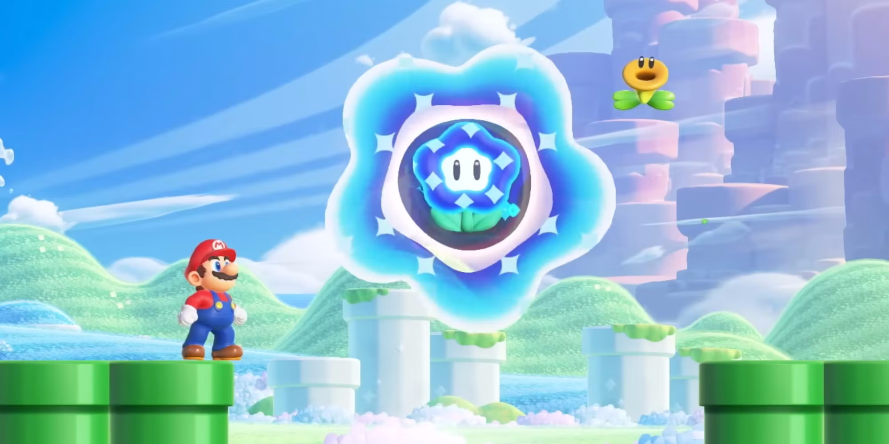

Ooookay Multiplayer Features
This was a bad topic to pick. I should have picked the Wonder Flowers. It's only the name of the dang game. like the Wonder effects are so important to what makes Super Mario Wonder so special. "Multiplayer features," please, like they're cute and all but they're totally superflus and you can only play with them if you have the nintendo online subscription or whatever it's called. What a mistake.
I guess I should talk about them though. I've already gotten this far. So basically, you got the typical New Super Mario Bros. Local multiplayer, up to four can play and jump on each other's heads and bonk into each other and whatever, good stuff I guess it's definietly choaic. But the real interesting stuff is the new multiplayer ghosts. Like this is Dark Souls or something. They create a form of indirect multiplayer because you can get power ups from other players, they can revive you if you die, and you can even get hints on secrets if you see them hitting an invisable block or navigating a platforming puzzle. Real novel stuff.